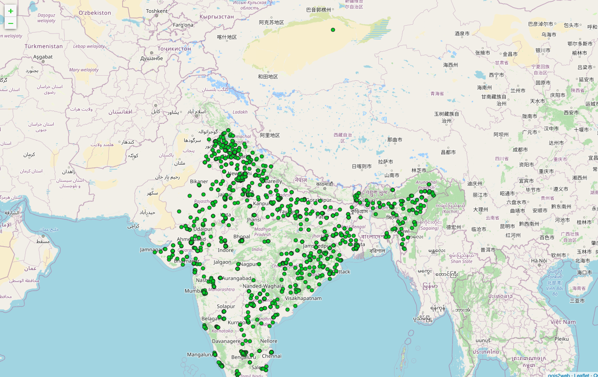

QGIS ADDITIONAL RESOURCES AND RAINFALL AND SOIL DISTRIBUTION

QGIS functions as geographic information system (GIS) software, allowing users to analyze and edit spatial information, in addition to composing and exporting graphical maps. QGIS supports both raster and vector layers; vector data is stored as either point, line, or polygon features. Multiple formats of raster images are supported, and the software can georeference images.
Implementation of Crop prediction and Precision Agriculture involves the use of geospatial information to improve the understanding of the spatial heterogeneity of soil properties and crop performance. Accounting for local needs allows for the optimization of the use of agricultural inputs to maximize profitability and to reduce the negative environmental impact. Geographic information systems (GIS) have been used to manage, process, and interpret multiple geospatial data layers. Open-source access to powerful analytical tools make it attractive for the initial exploration of geospatial data, including those related to crop production. Although this software is not specifically customized for agricultural data management, its powerful functionalities offer practical toolsets to meet the key requirements.